install.packages("hmsidwR")
# or
# install the development version of book package
devtools::install_github("Fgazzelloni/hmsidwR")11 Interpreting Model Results Through Visualisation
Learning Objectives
- Visualize predicted vs. observed values and assess residuals
- Interpret model metrics with VIP, accuracy, and partial dependency plots
- Create and customize ROC curves and compute AUC for classification models
In the introduction to data visualisation (Chapter 10), we explored foundational techniques for effectively communicating model results and data insights through plots. We reviewed essential plots used to visualise predictions and outcomes, such as scatter plots, line graphs, and bar charts. The chapter also covered how to customise these plots using colours, palettes, legends, and guides to improve clarity and visual appeal. Additionally, we discussed how to craft compelling data stories by organising multiple plots in a layout and saving them as image files for reports or presentations.
In this chapter, which is an essential part of the data visualisation section, we focus on how to effectively interpret and use the results from machine learning models in the context of health metrics and infectious diseases.
We will explore how to visualise the results of:
- Regression models with a linear regression, and a generalized additive model (GAM)
- Classification models with decision trees, and random forest models.
11.1 Practical Insights and Examples
The practice of visualising model results is essential for communicating insights from a model to stakeholders.
Considerations for visualising model results include:
- Understanding the data: Before visualising the results, it is important to understand the data and the model used. This includes understanding the variables, their relationships, and the assumptions of the model.
- Choosing the right visualisation: Different types of data and models require different types of visualisations. It is important to choose the right visualisation to effectively communicate the results.
11.1.1 Example: Deaths due to Meningitis
Data are from the Institute for Health Metrics and Evaluation (IHME) and include death rates due to meningitis, as well as two exposure levels of risk factors—particulate matter (PM2.5) and smoking—in the Sub-Saharan Africa (Central African Republic, Zambia, Eswatini, Lesotho, and Malawi) from 1990 to 2021. The data are in the {hmsidwR} package and can be loaded as hmsidwR::meningitis.
Let’s have a look at the first few rows of the data:
# Load libraries and data
library(tidyverse)
library(hmsidwR)
meningitis %>% head
#> # A tibble: 6 × 6
#> year location deaths dalys smoking pm25
#> <dbl> <chr> <dbl> <dbl> <dbl> <dbl>
#> 1 1990 Eswatini 12.6 669. 5.91 55.0
#> 2 1990 Malawi 52.7 3160. 7.57 78.7
#> 3 1990 Zambia 54.9 3101. 6.71 66.9
#> 4 1990 Lesotho 10.1 541. 10.6 61.2
#> 5 1990 Central African Republic 33.7 2142. 6.61 80.0
#> 6 1991 Zambia 55.4 3101. 6.71 66.6Meningitis1 is a serious global health concern characterised by inflammation of the membranes surrounding the brain and spinal cord. It can arise from both infectious and non-infectious causes and is often associated with a high risk of mortality and long-term complications.
In this example, we explore how two environmental risk factors — particulate matter (PM2.5) and smoking — may influence meningitis mortality. These variables represent aggregate exposure levels that could potentially contribute to meningitis-related deaths.
Meningitis death rates vary considerably across countries and over time. To begin, we visualise how these rates have changed from 1990 to 2021 in five Sub-Saharan African countries. A scatter plot will show annual death rates by country, while a smooth line will reveal the overall trend, helping to contextualize patterns before moving to modelling.
meningitis %>%
ggplot(aes(x = year, y = deaths)) +
geom_line(aes(group = location,
linetype = location)) +
geom_smooth() +
labs(title = "Deaths due to Menigitis",
subtitle = "from 1990 to 2021 in Sub-Saharan Africa",
y = "Death Rates", x = "Time (Year)") +
theme(legend.position = "bottom",
legend.title = element_blank()) 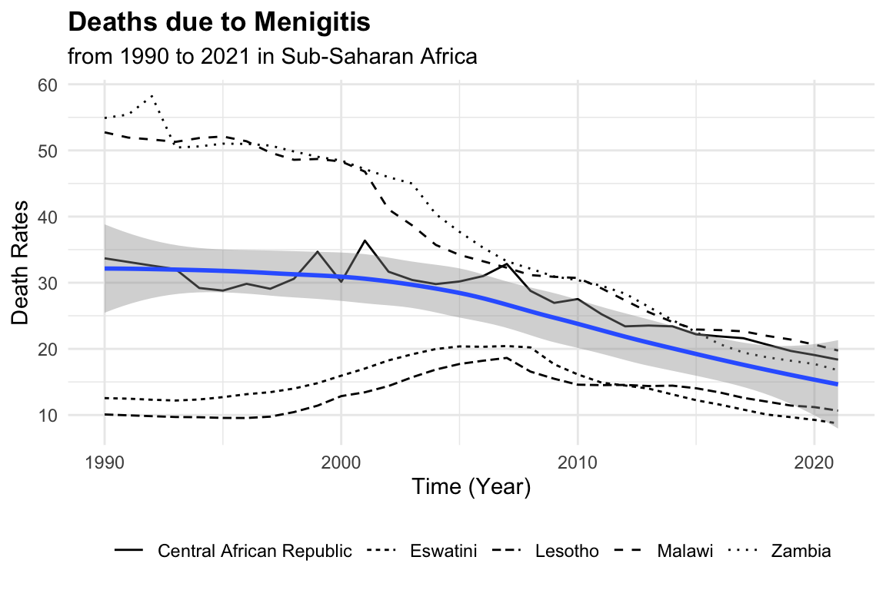
To gain an idea of the estimated average of death rates in the population, we can fit a simple linear regression model with lm() function, with the formula deaths ~ 1, which means that we are fitting a model with only an intercept (i.e., no predictors). Then we draw a simple Q-Q plot2 (a scatterplot created by plotting two sets of quantiles against one another) to check the normality of the residuals.
mod0 <- lm(deaths ~ 1, data = meningitis)
summary(mod0)
#>
#> Call:
#> lm(formula = deaths ~ 1, data = meningitis)
#>
#> Residuals:
#> Min 1Q Median 3Q Max
#> -17.092 -11.372 -3.745 6.822 32.369
#>
#> Coefficients:
#> Estimate Std. Error t value Pr(>|t|)
#> (Intercept) 25.826 1.062 24.32 <2e-16 ***
#> ---
#> Signif. codes: 0 '***' 0.001 '**' 0.01 '*' 0.05 '.' 0.1 ' ' 1
#>
#> Residual standard error: 13.43 on 159 degrees of freedomThe summary of this model shows the intercept value to be the estimate average of the death rates. We can look at the distribution of the death rates with an histogram:
hist1 <- meningitis %>%
ggplot(aes(x = deaths)) +
geom_histogram(bins = 10,
fill = "grey70", color = "grey40") +
geom_vline(aes(xintercept = mean(deaths)),
color = "black",
size = 2,
linetype = "dashed") +
labs(title = "Histogram of Death Rates due to Meningitis",
x = "Death Rates", y = "Count") +
theme(legend.position = "bottom",
legend.title = element_blank())
# Add log scale to x axis
hist2 <- hist1 +
scale_x_log10() 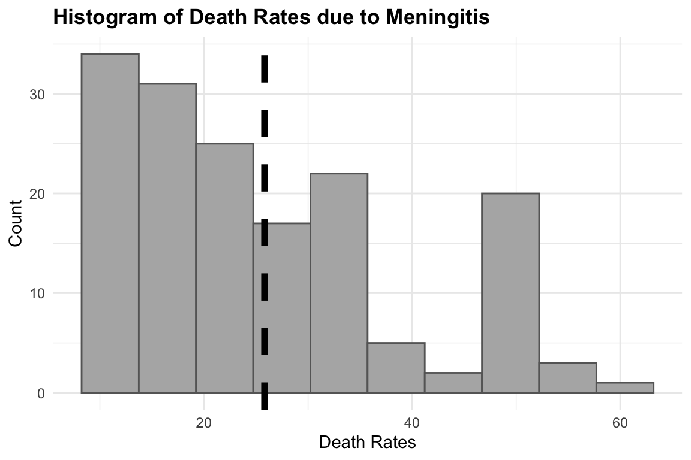
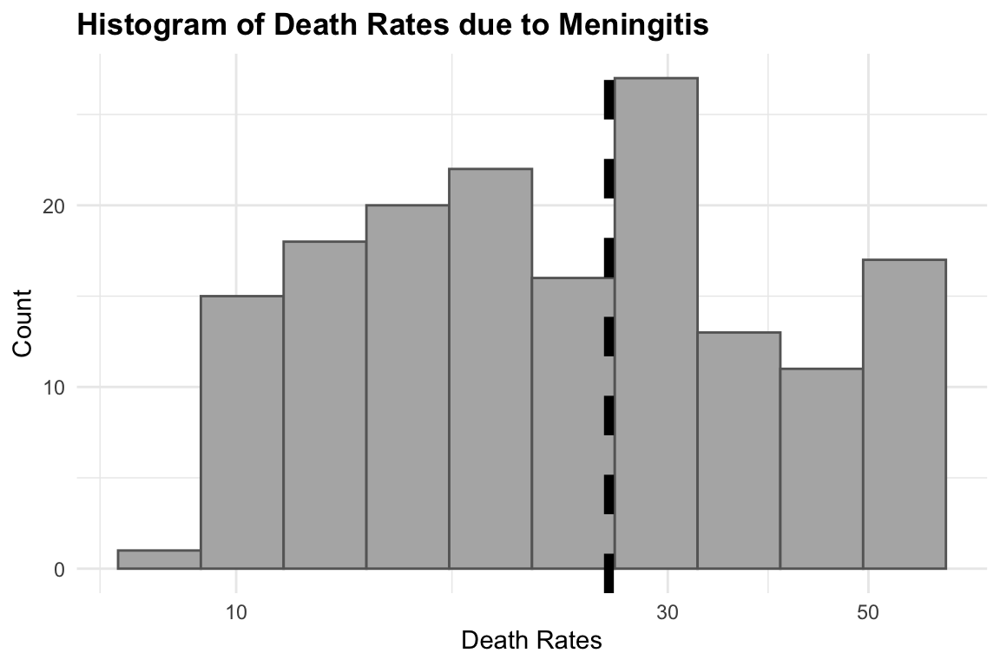
To investigate the non linear relationship between the number of deaths and the two risk factors, we can use a Generalized Additive Model (GAM) with s() function from the {mgcv} package. The s() function is used to fit smooth terms in the model, which allows us to capture non-linear relationships between the predictors and the response variable.
library(mgcv)
mod1 <- gam(deaths ~ s(smoking), data = meningitis)
mod2 <- gam(deaths ~ s(smoking) + s(pm25),
data = meningitis)To summarise, the models results in a table format, with the estimated coefficients for each model, we can see that the values for the intercept and the coefficients for smoking and PM2.5 are all positive and statistically significant (p < 0.05), indicating that higher levels of these risk factors are associated with higher death rates due to meningitis.
| Model | Beta0 | Beta1 | Beta2 |
|---|---|---|---|
| mod0 - linear model | 25.83 | NA | NA |
| mod1 - gam 1 predictor | 25.83 | 25.99 | NA |
| mod2 gam 2 predictors | 25.83 | 14.68 | 1.18 |
plot(mod1)
plot(mod2)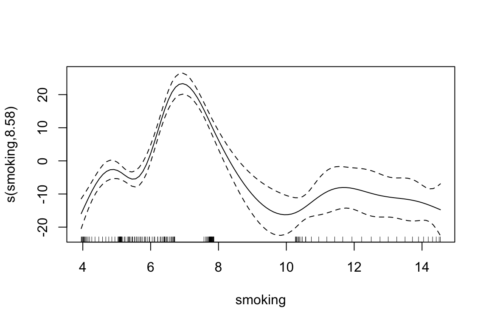
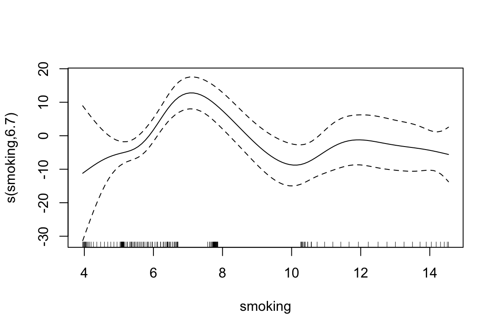
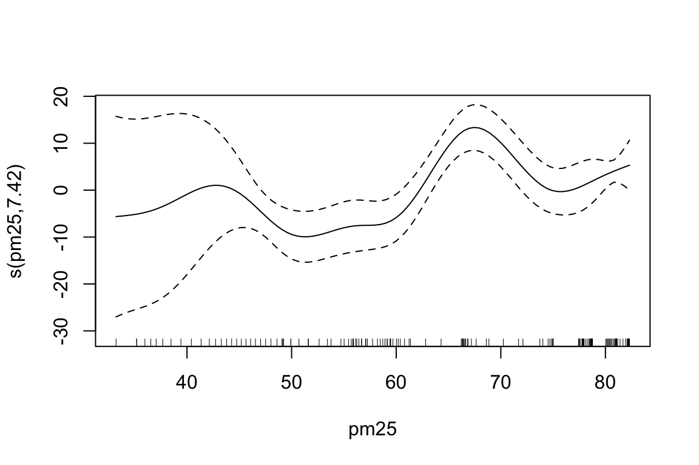
A further comparison is done with the AIC() function:
AIC(mod1, mod2)
#> df AIC
#> mod1 10.57829 1102.339
#> mod2 16.11216 1060.531The second GAM model (mod2) is clearly better than the first one (mod1):
- The AIC drops by ~42 points, which is a substantial improvement (a drop of >10 is considered strong evidence).
- The additional smooth term s(pm25) significantly improves model fit, even after accounting for increased complexity (degrees of freedom increase from 10.6 to 16.1).
Let’s now include the year variable in the model, to account for the temporal trend in the data. We can also include an interaction term between year and location to account for the different trends in different countries. The by argument in the s() function allows us to fit separate smooth terms for each level of the location variable.
We set the location to be a factor variable:
meningitis$location <- as.factor(meningitis$location)Then we can fit the third model:
mod3 <- gam(deaths ~ s(smoking) + s(pm25) + s(year, by = location),
data = meningitis)The s(year, by = location) term allows for different smooth terms:
par(mfrow = c(2, 3))
for (i in 1:5) {
plot(mod3, select = i + 2, shade = TRUE,
main = levels(meningitis$location)[i])
}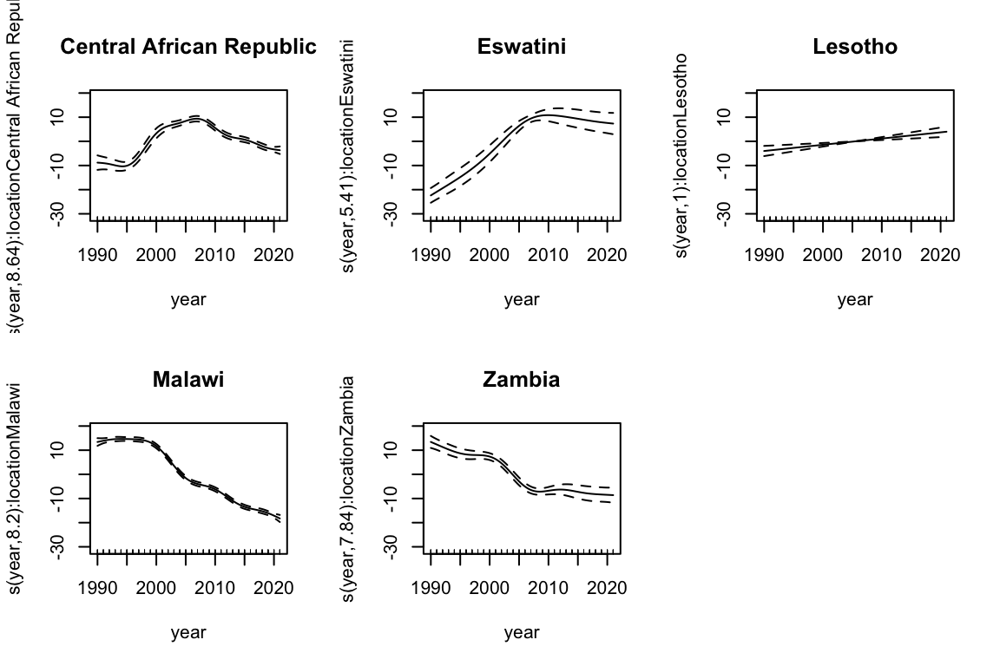
| Model | R2 | DevExp |
|---|---|---|
| mod0 - linear model | 0.7030403 | 0.7190617 |
| mod1 - gam 1 predictor | 0.7784592 | 0.7981222 |
| mod2 gam 2 predictors | 0.9957811 | 0.9968419 |
In conclusion, we began with a generalised additive model with just smoking as influencing factor, then we fit a second model where both smoking and PM2.5 were modelled as smooth functions. This second model explained nearly 80% of the variance in meningitis death rates. However, by incorporating country-specific nonlinear time trends, we dramatically improved the model fit to over 99% of variance explained. This highlights the importance of accounting for temporal and spatial structure in health data, particularly when modelling long time spans across multiple countries.
There is still a consideration to be made related to the exposure effect of smocking and PM2.5 on meningitis death rates.
| term | p.value_mod1 | p.value_mod2 | p.value_mod3 |
|---|---|---|---|
| s(smoking) | 0 | 7.69e-05 | 0.0000000 |
| s(pm25) | 0 | 0.00e+00 | 0.6979803 |
In the second model (mod2), both the smoking and PM2.5 terms have p-values below 0.05, indicating that they are statistically significant predictors of meningitis mortality. However, when incorporating temporal and spatial effects in mod3, the significance of these exposure variables changes — most notably, PM2.5 is no longer statistically significant. This shift suggests that the apparent association in the simpler model may be confounded by time trends or country-level differences, highlighting the importance of accounting for structured variation in space and time.
Let’s use both models to predict the number of deaths due to meningitis in the dataset. We can use the predict() function to obtain the predicted values for the model. The predicted values are added to the original dataset as a new column called predicted.
meningitis$predicted_mod2 <- predict(mod2)
meningitis$predicted_mod3 <- predict(mod3)ggplot(meningitis,
aes(x = year, y = deaths, color = location)) +
geom_line() +
geom_line(aes(y = predicted_mod2),
linetype = "dashed") +
facet_grid(location ~ ., scale = "free") +
labs(title = "Meningitis Death Rates by Country",
subtitle = "Observed vs Predicted",
y = "Death Rate", x = "Year") +
theme(legend.position = "none")
ggplot(meningitis,
aes(x = year, y = deaths, color = location)) +
geom_line() +
geom_line(aes(y = predicted_mod3),
linetype = "dashed") +
facet_grid(location ~ ., scale = "free") +
labs(title = "Meningitis Death Rates by Country",
subtitle = "Observed vs Predicted",
y = "Death Rate", x = "Year") +
theme(legend.position = "none")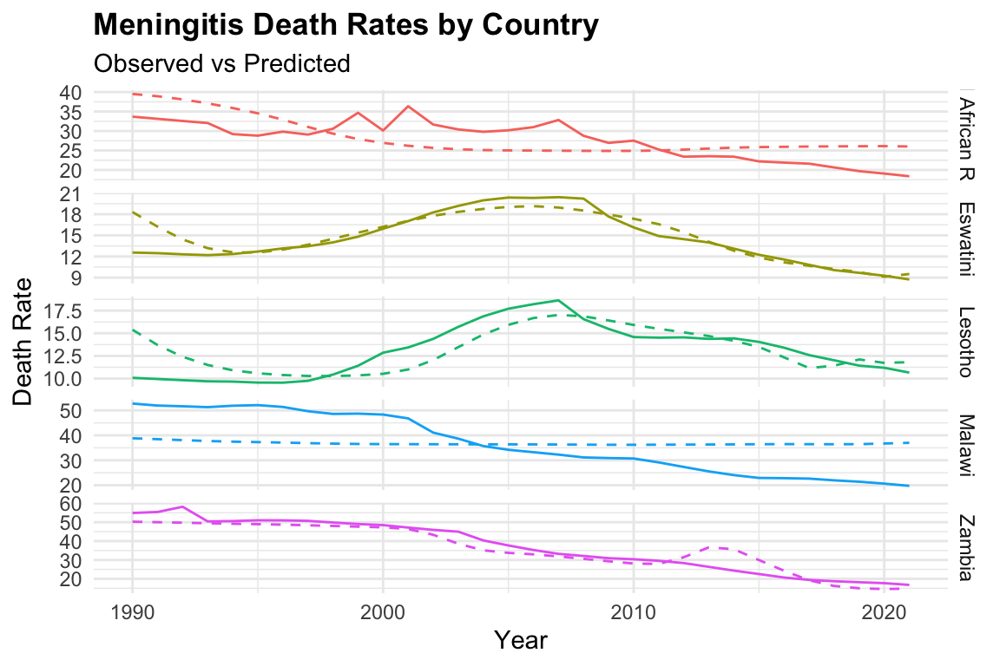
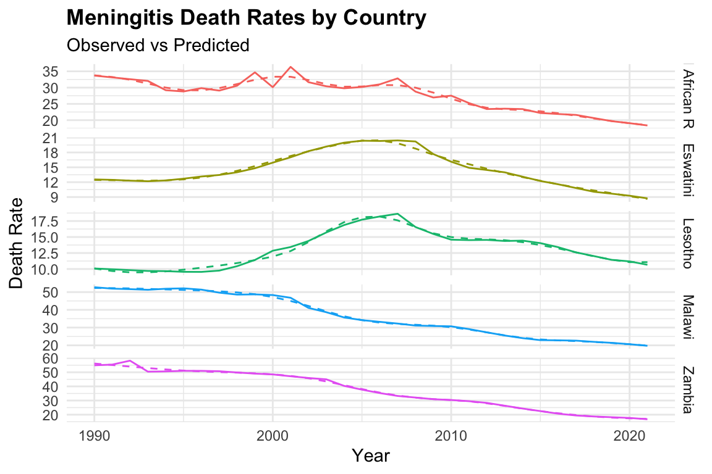
We can notice that the model fits the data well, with the predicted values closely following the observed values, with mod3 clearly overfitting the data.
Let’s check the residuals of mod2:
meningitis %>%
# calculate the residuals to see how well the model fits the data
mutate(residuals = deaths - predicted_mod2) %>%
select(deaths, predicted_mod2, residuals) %>%
head()
#> # A tibble: 6 × 3
#> deaths predicted_mod2 residuals
#> <dbl> <dbl[1d]> <dbl[1d]>
#> 1 12.6 18.3 -5.76
#> 2 52.7 38.8 13.9
#> 3 54.9 50.3 4.62
#> 4 10.1 15.4 -5.31
#> 5 33.7 39.5 -5.83
#> 6 55.4 50.0 5.40The residuals column represents the difference between the observed and predicted values. A positive residual indicates that the model underestimates the number of deaths, while a negative residual indicates an overestimate.
To evaluate model performance, we can visualize the residuals against the predicted values. In this plot, the dashed line marks the zero-residual baseline. Points above the line correspond to underestimation, and those below represent overestimation. The fact that most points cluster closely around the zero line suggests that the model provides a reasonably good fit to the data.
meningitis %>%
mutate(residuals = deaths - predicted_mod2) %>%
ggplot(aes(x = predicted_mod2, y = residuals)) +
geom_point() +
geom_hline(yintercept = 0, linetype = "dashed") +
facet_grid(location ~ ., scale = "free") +
labs(title = "Residuals vs Predicted",
x = "Predicted Values", y = "Residuals") +
theme(legend.position = "none")
meningitis %>%
mutate(residuals = deaths - predicted_mod2) %>%
ggplot(aes(sample = residuals)) +
geom_qq() +
geom_qq_line() +
facet_grid(location ~ ., scale = "free") +
labs(title = "QQ-plot of the residuals",
x = "Theoretical Quantiles", y = "Sample Quantiles") +
theme(legend.position = "none")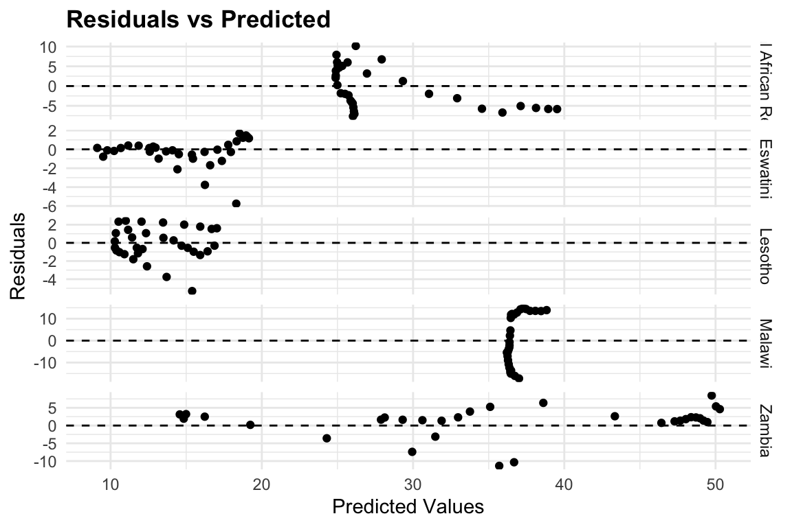
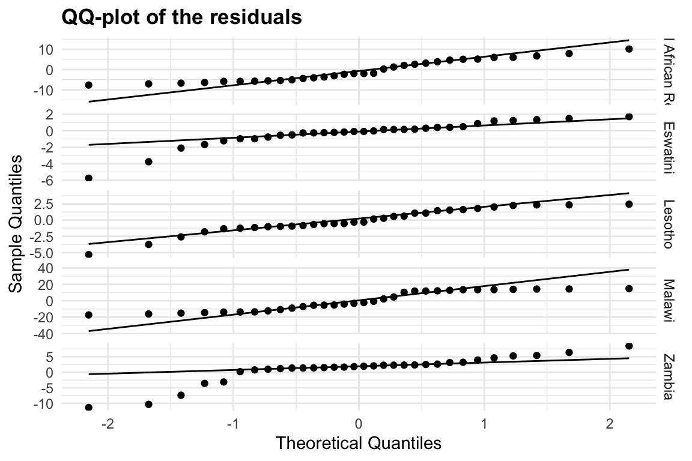
Heteroskedasticity is a common problem in regression analysis, and it occurs when the variance of the residuals is not constant across all levels of the predictor variables. This can lead to biased estimates of the coefficients and incorrect conclusions about the significance of the predictors. In this case, we can see that the residuals are not evenly distributed around zero, indicating that there may be some heteroskedasticity in the data.
11.1.1.1 Exercise: One Country Focus
Improve the model specifically for Lesotho by refining the smooth terms and including year as a covariate to capture temporal patterns:
- Subset the data to include only observations from Lesotho
- Adjust the smooth functions as needed for a better fit
- Refit the model incorporating the year variable
- Perform cross-validation by splitting the data into training and test sets, and simulate model performance across multiple samples
Evaluate the model fit and compare it to previous results. Consider visualizing the residuals and predicted values for further insight.
Lesotho_data <- meningitis %>%
filter(location == "Lesotho")
Lesotho_data$predicted_mod2 <- predict(mod2, newdata = Lesotho_data)Lesotho_data %>%
ggplot() +
geom_point(aes(year, deaths)) +
geom_line(aes(year, predicted_mod2),
linetype = "dashed") +
labs(title = "Lesotho_data: Observed vs. Predicted",
x = "Time(Year)", y = "Death Rates")
Lesotho_data %>%
ggplot(aes(x = year, y = deaths)) +
geom_point() +
geom_line(aes(year, predicted_mod2),
linetype = "dashed") +
geom_segment(aes(xend = year,
yend = predicted_mod2),
linewidth = 0.1) +
labs(title = "Lesotho: Observed vs. Predicted",
subtitle = "Segments represent the residuals",
x = "Time(Year)", y = "Death Rates") 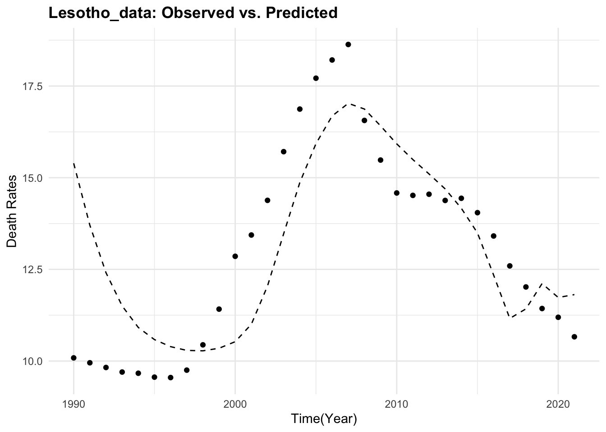
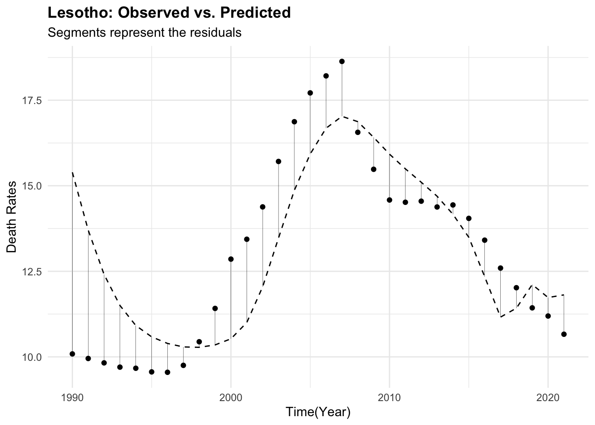
11.1.2 Example: Ischemic Stroke Decision Tree
In this example we have a look at how to visualise the results of a decision tree model for predicting Ischemic Stroke.
Load necessary libraries and the data for the Ischemic Stroke.3
# Ischemic Stroke decision tree
library(tidymodels)
library(rpart)
library(rpart.plot)Data are already split into training and test sets, we will combine them for the analysis. The stroke_train and stroke_test datasets contain 89, 37 observations respectively and 29 variables. Within the variables we have information on volume, proportion, area, thickness of the arterial wall, among others. The target variable is Stroke, which indicates whether the patient has had a stroke or not.4
We select the variables of interest for the analysis with any_of(), a function to select the variables based on their names.
?any_of() for more infromation about the function.
selected_train <- stroke_train %>%
dplyr::select(any_of(VC_preds), Stroke)To check which columns in stroke_train dataset were not selected:
setdiff(names(stroke_train), names(selected_train))
#> [1] "NASCET" "age"
#> [3] "sex" "SmokingHistory"
#> [5] "AtrialFibrillation" "CoronaryArteryDisease"
#> [7] "DiabetesHistory" "HypercholesterolemiaHistory"
#> [9] "HypertensionHistory"Set up the recipe for the data with the recipe() function from the tidymodels package. We will use the step_corr() function to remove highly correlated predictors, step_center() and step_scale() to standardise the predictors, step_YeoJohnson() to transform the predictors, and step_zv() to remove zero variance predictors.
is_recipe <- recipe(Stroke ~ ., data = selected_train) %>%
#step_interact(int_form) %>%
step_corr(all_predictors(), threshold = 0.75) %>%
step_center(all_predictors()) %>%
step_scale(all_predictors()) %>%
step_YeoJohnson(all_predictors()) %>%
step_zv(all_predictors())
is_recipe %>%
prep() %>%
bake(new_data=NULL) %>%
select(1:5) %>%
head(5)
#> # A tibble: 5 × 5
#> CALCVolProp MATXVol MATXVolProp MaxCALCAreaProp MaxDilationByArea
#> <dbl> <dbl> <dbl> <dbl> <dbl>
#> 1 -0.143 0.106 -0.161 0.0541 0.0249
#> 2 -1.35 -0.0530 0.858 -0.931 -0.748
#> 3 -0.784 1.03 0.218 0.284 -0.320
#> 4 1.06 0.587 -0.144 1.05 0.423
#> 5 -0.708 -0.107 -0.307 -0.203 -0.738Set up the decision tree model with the decision_tree() function from the tidymodels package. We will use the rpart engine for the decision tree model and set the mode to classification.
class_tree_spec <- decision_tree() %>%
set_engine("rpart") %>%
set_mode("classification")Finally, we will fit the model with the fit() function from the tidymodels package and visualise the results with the rpart.plot package.
is_wfl <- workflow() %>%
add_model(class_tree_spec) %>%
add_recipe(is_recipe)
is_dt_fit_wfl <- is_wfl %>%
fit(data = selected_train,
control = control_workflow())
is_dt_fit_wfl%>%
extract_fit_engine() %>%
rpart.plot::rpart.plot(roundint = FALSE)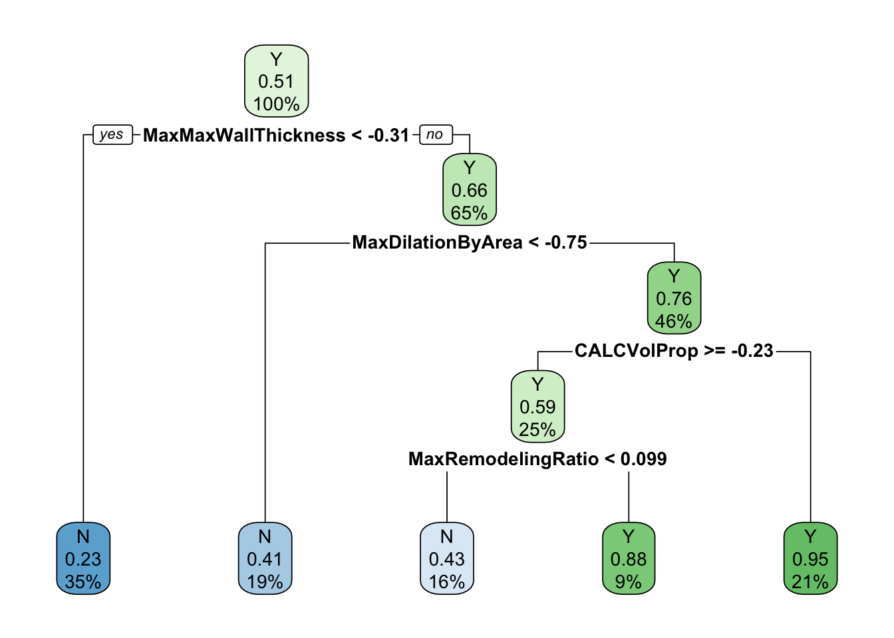
In this plot, the decision tree is visualised with the rpart.plot and the information released evidences the importance of some specific predictors, such as max wall thickness, max dilatation by area, volume proportion, and max remodelling ratio. The decision tree is a useful tool for visualising the results of the model and understanding the relationships between the predictors and the target variable.
The interpretation of the decision tree is straightforward: each node represents a decision based on the value of a predictor, and the leaves represent the final classification. The tree can be pruned to reduce its complexity and improve its interpretability. The decision tree can be used to make predictions on new data by following the path from the root to a leaf node based on the values of the predictors.
11.1.3 Example: Ischemic Stroke Classification
In this second example we will demonstrate classification (stroke vs. no stroke) using patient and plaque imaging features, and visualise model insights for stakeholder communication.
The objective is to visualise how well the model predict whether a patient experienced a stroke (Stroke) based on imaging features (e.g., MaxStenosisByArea, CALCVolProp) and risk factors (e.g., age, DiabetesHistory).
Visualise:
- Variable importance
- Prediction performance (e.g., ROC curve)
- Partial dependence of key features
Load necessary libraries, and fit a random forest model to the data with the rand_forest() function from the {tidymodels} package. We will use the ranger engine for the random forest model and set the mode to classification.
library(tidyverse)
library(tidymodels)
library(vip)
library(DALEXtra)
library(pROC)The model specify the number of trees to grow, the minimum number of observations in a node before a split is attempted, and the maximum depth of the tree. The set_engine() function specifies the engine to use for the model, in this case ranger, and the set_mode() function specifies the mode of the model, in this case classification.
rf_spec <- rand_forest(trees = 500, min_n = 5) %>%
set_engine("ranger", importance = "impurity") %>%
set_mode("classification")
rf_wf <- workflow() %>%
add_formula(Stroke ~ .) %>%
add_model(rf_spec)
rf_fit <- rf_wf %>% fit(data = stroke_train)11.1.3.1 Variable Importance
The object rf_fit contains the fitted model. We can extract the the model specification and use the vip() function to visualise what are the predictors that most influence the model. The vip() function creates a variable importance plot, which shows the importance of each predictor in the model. The importance is calculated based on the Mean Decrease in Impurity (MDI) for each predictor.
rf_fit %>%
extract_fit_parsnip() %>%
vip::vip(num_features = 10)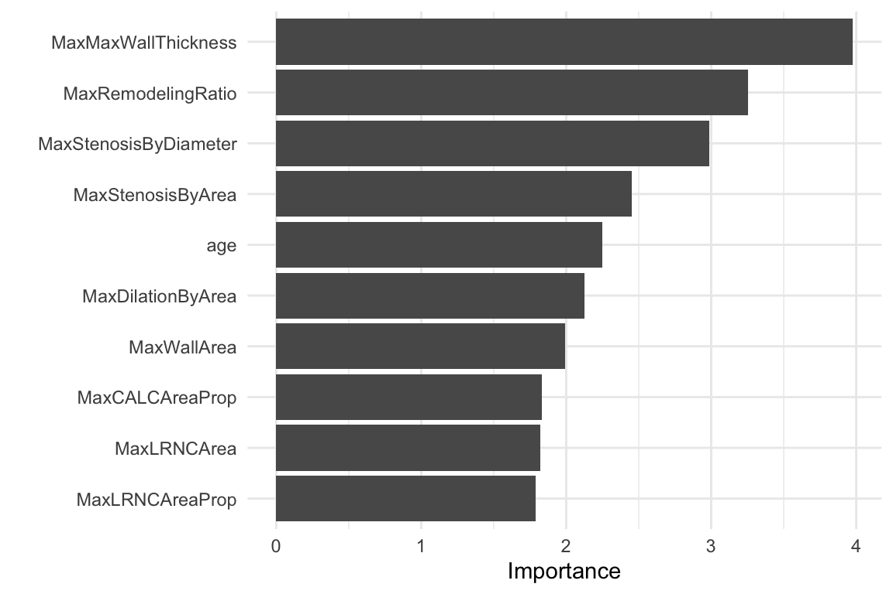
We can conclude that for this data set, the most important predictors are MaxStenosisByArea, CALCVolProp, MaxWallThickness, and MaxRemodellingRatio.
Next step is to evaluate the model performance. We will use the predict() function to make predictions on the test data set (stroke_test) and calculate the accuracy of the model.
set.seed(05122025)
rf_preds <- predict(rf_fit, stroke_test,
type = "prob") %>%
bind_cols(predict(rf_fit, stroke_test)) %>%
bind_cols(stroke_test %>% select(Stroke))
rf_preds %>% head()
#> # A tibble: 6 × 4
#> .pred_N .pred_Y .pred_class Stroke
#> <dbl> <dbl> <fct> <fct>
#> 1 0.539 0.461 N N
#> 2 0.424 0.576 Y Y
#> 3 0.877 0.123 N Y
#> 4 0.868 0.132 N N
#> 5 0.849 0.151 N N
#> 6 0.686 0.314 N N11.1.3.2 Accuracy
The accuracy of the model is calculated as the proportion of correct predictions. The accuracy() function from the yardstick package calculates the accuracy of the model based on the predicted and observed values.
rf_preds %>%
accuracy(truth = Stroke, .pred_class)
#> # A tibble: 1 × 3
#> .metric .estimator .estimate
#> <chr> <chr> <dbl>
#> 1 accuracy binary 0.703In this case, the accuracy of the model is 0.70, which means that the model correctly predicts whether a patient experienced a stroke or not 70% of the time. The accuracy is calculated as the number of correct predictions divided by the total number of predictions.
11.1.3.3 ROC Curve
The Receiver Operating Characteristic (ROC) curve is a graphical representation of the performance of a binary classifier system as its discrimination threshold is varied. The ROC curve plots the true positive rate (TPR) against the false positive rate (FPR) at various threshold settings.
We can use the roc_curve() function from the yardstick package to calculate the ROC curve and the area under the curve (AUC). The roc_curve object contains the specificity and sensitivity values for each threshold, which can be used to calculate the AUC.
roc_curve <- yardstick::roc_curve(data = rf_preds,
truth = Stroke, .pred_N)
roc_curve %>% head()
#> # A tibble: 6 × 3
#> .threshold specificity sensitivity
#> <dbl> <dbl> <dbl>
#> 1 -Inf 0 1
#> 2 0.099 0 1
#> 3 0.197 0.0526 1
#> 4 0.211 0.105 1
#> 5 0.258 0.158 1
#> 6 0.304 0.158 0.944The relationship between the True Positive Rate (TPR) and False Positive Rate (FPR) is visualised in the ROC curve. The area under the curve (AUC) is a measure of the model’s performance, with values closer to 1 indicating better performance. The specificity and sensitivity of the model indicate the proportion of true positives and true negatives, respectively, and we can use the autoplot() function to visualise the ROC curve.
autoplot(roc_curve)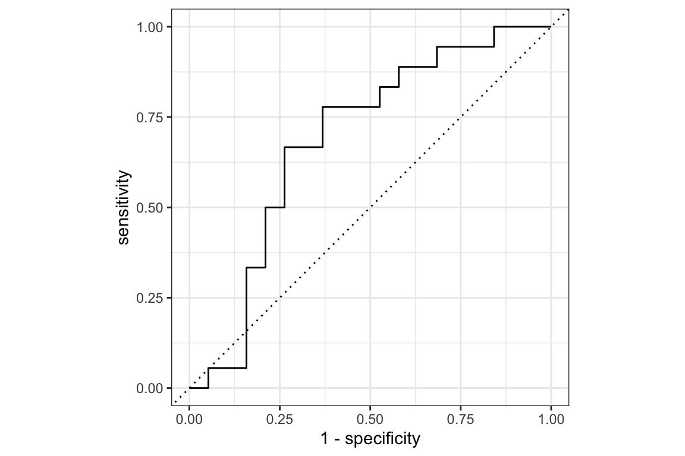
Another way to extract the ROC curve is to use the pROC package and the roc() function. The roc() function takes the observed values and the predicted probabilities as arguments and returns an object containing the ROC curve.
roc_obj <- pROC::roc(rf_preds$Stroke,
rf_preds$.pred_N)
roc_obj %>%
pROC::auc() %>%
round(2)
#> [1] 0.69The roc_obj object provides information about the area under the ROC curve. In this case we have an AUC is 0.69. The AUC is a measure of the model’s performance, values closer to 1 indicate better performance.
11.1.3.4 Partial Dependence
“How does the prediction change when a specific feature changes, holding all others constant?”
Finally, we attempt an explanation of the model using DALEX and DALEXtra packages, and some specific functions, such as: explain_tidymodels() and model_profile().
explainer_rf <-
DALEXtra::explain_tidymodels(rf_fit,
data = select(stroke_train, -Stroke),
y = stroke_train$Stroke)The explainer_rf object contains the model, the data, and the target variable and it will be used to create the partial dependence plot with the model_profile() function.
A Partial Dependence Plot (PDP) is a tool used in machine learning to help interpret black-box models like random forests. It shows the marginal effect of one (or two) features on the predicted outcome, while averaging out the influence of all other features.
In this case we specify the MaxStenosisByArea variable, to see how changes in MaxStenosisByArea influence the model’s predicted outcome, on average. A higher value of MaxStenosisByArea indicates more severe arterial narrowing, which is a risk factor for stroke or heart attack.
DALEX::model_profile(explainer_rf,
variables = "MaxStenosisByArea") %>%
plot() +
labs(
title = "Partial Dependence Plot for Ischemic Stroke",
subtitle = "",
x = "Value",
y = "AVG Prediction") +
theme_minimal() 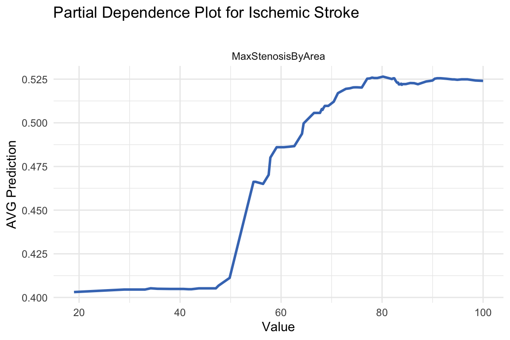
The plot shows the partial dependence of the MaxStenosisByArea variable on the predicted probability of having a stroke. The results indicate that MaxStenosisByArea has a positive influence on stroke risk, though this effect plateaus beyond a certain threshold.
11.2 Summary
In this chapter, we have learned how to visualise the results of a model. There are several important considerations when visualising the results of a model, and differences might arise due to the type of model used. We have seen how to use several packages and functions, such as ggplot2, vip, pROC, and DALEX to visualise the results of a model. We have also seen how to interpret the results of a model and how to communicate them effectively. The examples provided in this chapter demonstrate how to use visualisation techniques to enhance decision-making and communicate findings to various stakeholders.
“Meningitis,” n.d., https://www.who.int/news-room/fact-sheets/detail/meningitis.↩︎
“QQ Plot,” March 20, 2025, https://en.wikipedia.org/w/index.php?title=Q%E2%80%93Q_plot&oldid=1281381233.↩︎
“FES/Data_Sets/Ischemic_Stroke at Master · Topepo/FES,” n.d., https://github.com/topepo/FES/tree/master/Data_Sets/Ischemic_Stroke.↩︎
Max Kuhn Johnson and Kjell, 2 Illustrative Example: Predicting Risk of Ischemic Stroke | Feature Engineering and Selection: A Practical Approach for Predictive Models, n.d., https://bookdown.org/max/FES/stroke-tour.html.↩︎